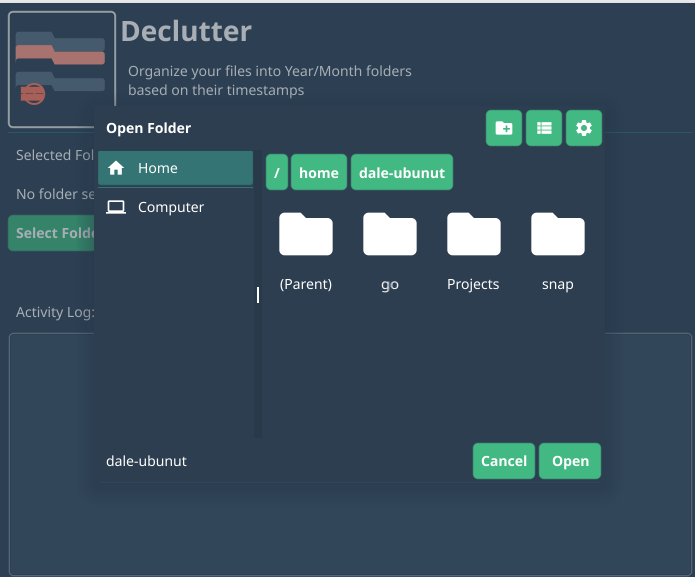
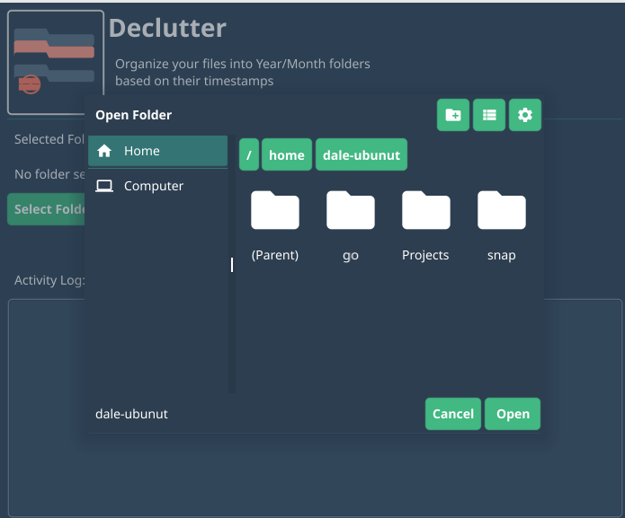
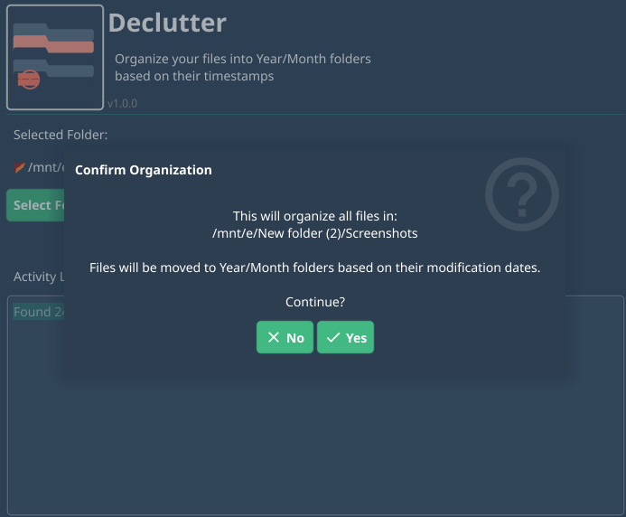
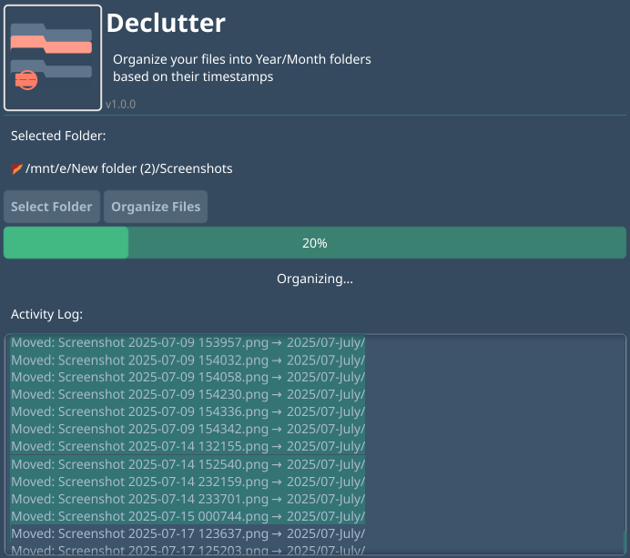
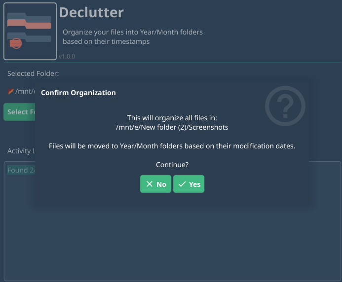
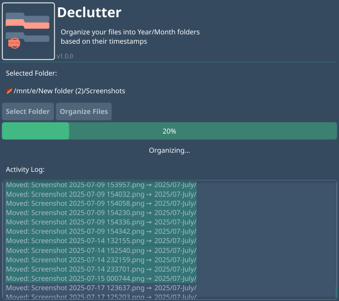

Declutter
Organize your files into Year/Month folders based on their timestamps. Cross-platform, fast, and easy to use.
Organize your files into Year/Month folders based on their timestamps. Cross-platform, fast, and easy to use.
Automatically sorts files into Year/Month folders based on modification dates
Works on Windows, macOS, and Linux with native performance
Built with Go for blazing fast file operations
Simple steps to organize your files
 

 




Get the latest version for your operating system